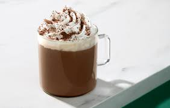

border-style çizginin şeklini belirler. Kutuların içindeki declaration, kullanılan property ve değeri doğrudan gösterir.
border-width kenarlığın kalınlığını belirler. thin, medium ve thick tarayıcının hazır kalınlık değerleridir.
border-radius köşeleri yuvarlatır. Yüzde değeri kutunun şekline göre yuvarlama yapar.
outline kutunun dışına çizilir ve layout içinde yer kaplamaz. outline-offset, çizgiyi kutudan uzaklaştırır.
background-color yalnızca arka plan rengini değiştirir. Aynı renk farklı CSS renk yazımlarıyla gösterilmiştir.
background, renk ve diğer arka plan ayarlarını kısa yazımla birlikte vermeyi sağlar.
background-size görselin kutuya nasıl sığacağını belirler. auto doğal boyutu, cover doldurmayı, contain ise tamamını göstermeyi amaçlar.
background-position arka plan görselini kutunun içinde sola, ortaya veya sağa yerleştirir.
background-repeat görselin tekrarlanma yönünü belirler.
object-fit, img veya video içeriğinin kendi kutusuna nasıl sığacağını belirler. Aynı görseli aynı ölçülü kutular içinde karşılaştırın.

object-fit: fill